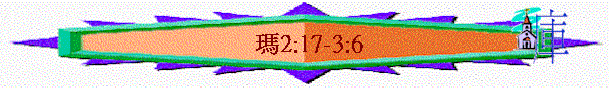

|
信 仰 的 喚 醒 |
||||||||||||
|
引 言 |
在關係上神愛他們 |
在事奉上藐視神 |
在盟約上不忠貞 |
在言語上煩瑣神 |
在奉獻上奪供物 |
在話語上頂撞神 |
||||||
|
1:1 |
1:2-5 |
1:6-2:9 |
2:10-16 |
2:17-3:6 |
3:7-12 |
3:13-4:6 |
||||||
四）在言語上煩瑣神（２：１7－3：６）
１）喚醒－「你們用言語煩瑣耶和華」
＊人的言語
ａ）神聽見
ｂ）人渴望（詩１９：１４）
ｃ）神厭煩
２）不知－「我們在何事上煩瑣他呢？」
３）講解
ａ）煩瑣的言語
ｉ）說話的含意
ｉｉ）質疑的內容
ｉｉｉ）質疑的原因
ｂ）公義的引証
ｉ）神要差遣使者－建立公義
（１）我的使者
（２）立約的使者
（ａ）特質
（ｂ）工作
（ｃ）結果
ｉｉ）神要親身審判－履行公義
ｉｉｉ）神不消滅選民－見証公義
ｃ）回轉的呼籲
ｉ）反映父神－忍耐恩慈
ｉｉ）反映選民－愚昧無知
五）在奉獻上奪供物（３：７－１２）
１）喚醒－「你們竟奪取我的供物」
＊嚴重性
ａ）「奪取」
ｂ）「我的供物」
ｃ）「豈可．．．．竟」
２）不知－「我們在何事上奪取你的供物」
＊ＷＨＹ不知？
ａ）「我的供物」
ｂ）「通國的人」
３）講解
ａ）奪取的不是
ｉ）屬神的
ｉｉ）當納的
ｉｉｉ）只是「十分之一」
ｂ）奪取的禍患
ｃ）奉獻的福份